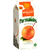

by SEO Mofo
Dec 1st, 2009
WordPress

In this article, I will show you exactly how I achieved natural, SEO-friendly permalinks in WordPress, by installing plugins and customizing settings.
by SEO Mofo
Nov 3rd, 2009
Thesis Theme
A post describing how to format a Thesis 3-column layout so that the width of each column is in the golden ratio (phi) to the width of its adjacent columns.